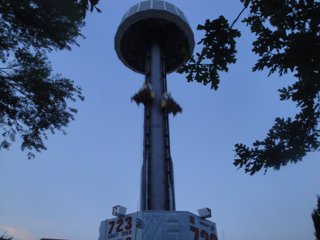

Gardaland is a really nice theme park. Granted, it's not amazing or one of the greatest or anything, but it certainly is a big amusement park and it's definetly the most popular theme park in all of Italy (even if it's not the best one.) And yeah. Gardaland definetly acts like it's the Disneyland of Italy. And while I certainly wouldn't call it on the same level as a Disney park, I will admit that it's the closest to being like one. It definetly has the most theming out of all the Italian Parks. Though that's honestly not saying much. It definetly has the most resort-like feel with a hotel included and a shuttle service. Just gotta see if they can capitalize on the beaches of Lake Garda. Seriously, I heard a report of someone walking by it and raving about it. But I found it nearly impossible to access. But anyways, Gardaland is still a really nice park. It may not be Disneyland, but it's still very nice and has some good theming and a fun atmosphere. Plus, it has some decent coasters. Raptor may not be crazy, but it's a fun Wing Rider. And since my last visit, they added a B&M Dive Coaster. Which really should help with their coaster collection. And the rest of the park is pretty balanced too. The flat rides are fun, the dark rides are of Disney quality in some cases, and it's just a really fun theme park. Definetly give it a visit while you're visiting Italy.
Here are the reviews of all the Flat Rides at Gardaland. It's not exactly one of the most amazing flat ride collections out there, but it's all right. It's got some fun rides. And let's start out with their first flat ride. Their Drop Tower. Now you may be thinking "AWESOME!!! I LOVE DROP TOWERS!!!", and yeah. They're fun and all. But this drop tower has one itty bitty little problem. IT'S TINY!!! Yeah, I like the Intamin 2nd Generation drop towers and all. And yeah. They're really fun and all. And this one is fun too. But...I can cliff jump this drop tower!! No, I'm dead serious. This thing felt around the same height as the 70 ftr from Tar Creek Falls. And while it may be freaky as f*ck cliff jumping, not so much with your typical drop tower. Sorry. I heard there was a height limit, and I'm still glad they have it, but it's still a bummer none the less. Anyways, moving on. They also have another Mad House. They're fun and all. But they tend to get old fast, and trust me. These rides are a dime a dozen in Europe (especially Italy). And the theme is to the typical Gardaland characters. So that's fun. And that's it. All that's left is a carousel and some teacups.

It may be fun, but man is it small.
Dark Rides
Gardaland actually has a really good dark ride collection. It's not huge or anything, but you can tell that some of these dark rides are ripping off Disney Famous Dark rides. And not only do they do that, but I'm going to say something incredibly controversial. In one case, their version is actually better than the official Disney version. Yeah, I know. Shocking. Movieland Studios isn't the only park in this town that has rip-offs better than the original. =) Yes, the dark ride, I Corsari is a knock off of Disney's Pirates of the Carribean. And both are really good dark rides. It's close, but I'm gonna go with the knock off. What makes it better? Well, it actually has some really good effects. There's an underwater mermaid portion of the ride, and this is one of the few dark rides that actually makes it seem like you are underwater. They certainly do a much better job on this than they do on the Little Mermaid dark ride at Disney's California Adventure. And on top of that, it has a cool drop, and plenty of family-friendly fun that I'm sure you're just dying to show your kids. Their other major dark ride would be the Ramses Shooting Dark Ride, which is one of the strangest and goofiest shooting dark rides out there. You're going into the past to fight Ramses and the ancient Egyptians, but then it turns out that the ancient Egyptians were really aliens. It's silly, it's goofy, and the History Channel is now bringing out a reporter to Gardaland to shoot their next documentary on it. =) Aside from that, there's their 3D Show on Ice Age, which is all right. I haven't seen any of the Ice Age movies, and I don't speak Italian, so I had no idea what was going on. And there's also a Spongebob Simulator which was rough for some reason. But hey. They do have some good dark rides for you to check out.
Check out all the wackiness of the Ramses Shooting Dark Ride.
Water Rides
I rode all of the park's water rides, and to be fair, it's actually a decent collection. Fuga de Altantide is a fun little shoot the chutes ride, though I will admit this. IT'S NOT A CREDIT!!! IT'S A SHOOT THE CHUTES RIDE!!! Just because it has fancy track that makes it look creditish does not mean that it is actually a credit. Colorado Boat is a fun log flume with a nice little bump to it as well as some theming. Jungle Rapids is fun and all, but there's just one little problem with the water rides. They may be fun and all, but they do not get you wet. And considering how hot it gets in Italy, that's kind of a bummer. No seriously. You get wetter on Raptor than on the rapids ride here. So yeah, it may be fun. But don't be surprised if it didn't help you cool down from the blazing Italian Heat.
Fun? Yes. Credit? NO!!!
Dining
The dining at Gardaland is not the best per se, but as you know, I LOVE Italian Food, and the food at Gardaland is fantastic because of that. I forgot where I ate, but I definetly remember that it was good. It was cafeteria style, but...come on. It's Italy. They can get away with serving anything in this country and it'd be good. Besides, they have lasagna here. And much like Garfield, I love that sh*t!! And knowing the country I'm in, it was amazing. It also came with some really good pudding, and you know that European Fanta is here. Damn, I want some of that good stuff now. =)
Here are the reviews of all the other stuff at Gardaland. As far as theming is concerned, they're actually doing pretty well. Granted, it's not amazing or anything, but it's better than average. Raptor has some really nice theming, their puny drop tower is about being dropped from the edge of space. Kind of ironic since it's by far the Intamin 2nd Generation Drop Tower closest to the ground. But hey, they do a really good job. Not only is the line themed, but the top is covered and they show some videos that really add to the experience. I already mentioned that their dark rides are really good. But as far as other stuff to do, there's really not much. Uh..., they have a nice pool at the hotel. I think. Or at least it looked nice. And the hotel is nice. But really, Gardaland is more about rides. I can see there being a few shows that I missed. And there's a couple things. I remember doing a hedge maze, that was fun. But ultimately, there's not much random cool things at Gardaland. Just go down the street and Movieland Studios will cover you on that front.
In Conclusion
Gardaland may not be the greatest park ever or even the best park in Italy, but it is still a really fun park. To visit. Granted, their roller coaster collection isn't the best, but they have some fun rides. And the rest of the park is just really fun. They have a decent flat ride collection featuring a small, but still really fun and well themed drop tower, some really cool and fun dark rides, plenty of water rides for the heat, and it's just got this really pleasent atmosphere right by Lake Garda. It's just the kind of park where you don't have to do too much, but it's just a real joy to visit. And yeah. That new Dive Machine just gives me another reason to come back. I have some high hopes for Gardaland and definetly recommend checking it out sometime.
Enthusiast FAQs.
*Are there kiddy coaster restrictions? - Nope. You can ride the kiddy coaster here.
Tips
*Ride Raptor if you want to cool off. It does a better job at getting you wet than the water rides.


{kind=link}